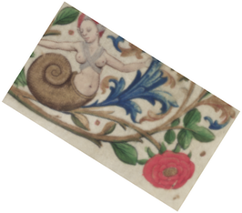

Transformation
Last modified: July 14, 2022
grey_convert
Image [GreyScale] grey_convert (IntVector newgrey)
| Operates on: | Image [GreyScale] |
|---|---|
| Returns: | Image [GreyScale] |
| Category: | Transformation |
| Defined in: | transformation.py |
| Author: | Fabian Schmitt and Christoph Dalitz |
Converts grey values to the new values provided in the vector newgrey, i.e. val is replaced by newgrey[val].
As this is only implemented for greyscale images, the vector newgrey must be of size 256 and all entries must be in [0,255].
Example 1: grey_convert([255, 254, 253, 252, 251, 250, 249, 248, 247, 246, 245, 244, 243, 242, 241, 240, 239, 238, 237, 236, 235, 234, 233, 232, 231, 230, 229, 228, 227, 226, 225, 224, 223, 222, 221, 220, 219, 218, 217, 216, 215, 214, 213, 212, 211, 210, 209, 208, 207, 206, 205, 204, 203, 202, 201, 200, 199, 198, 197, 196, 195, 194, 193, 192, 191, 190, 189, 188, 187, 186, 185, 184, 183, 182, 181, 180, 179, 178, 177, 176, 175, 174, 173, 172, 171, 170, 169, 168, 167, 166, 165, 164, 163, 162, 161, 160, 159, 158, 157, 156, 155, 154, 153, 152, 151, 150, 149, 148, 147, 146, 145, 144, 143, 142, 141, 140, 139, 138, 137, 136, 135, 134, 133, 132, 131, 130, 129, 128, 127, 126, 125, 124, 123, 122, 121, 120, 119, 118, 117, 116, 115, 114, 113, 112, 111, 110, 109, 108, 107, 106, 105, 104, 103, 102, 101, 100, 99, 98, 97, 96, 95, 94, 93, 92, 91, 90, 89, 88, 87, 86, 85, 84, 83, 82, 81, 80, 79, 78, 77, 76, 75, 74, 73, 72, 71, 70, 69, 68, 67, 66, 65, 64, 63, 62, 61, 60, 59, 58, 57, 56, 55, 54, 53, 52, 51, 50, 49, 48, 47, 46, 45, 44, 43, 42, 41, 40, 39, 38, 37, 36, 35, 34, 33, 32, 31, 30, 29, 28, 27, 26, 25, 24, 23, 22, 21, 20, 19, 18, 17, 16, 15, 14, 13, 12, 11, 10, 9, 8, 7, 6, 5, 4, 3, 2, 1, 0])

mirror_horizontal
mirror_horizontal ()
| Operates on: | Image [OneBit|GreyScale|Grey16|RGB|Float|Complex] |
|---|---|
| Category: | Transformation |
| Defined in: | transformation.py |
| Author: | Michael Droettboom, Karl MacMillan, and Christoph Dalitz |
Flips the image across the horizontal (x) axis.
Example 1: mirror_horizontal()

mirror_vertical
mirror_vertical ()
| Operates on: | Image [OneBit|GreyScale|Grey16|RGB|Float|Complex] |
|---|---|
| Category: | Transformation |
| Defined in: | transformation.py |
| Author: | Michael Droettboom, Karl MacMillan, and Christoph Dalitz |
Flips the image across the vertical (y) axis.
Example 1: mirror_vertical()
resize
Image [OneBit|GreyScale|Grey16|RGB|Float|Complex] resize (Dim dim, Choice [None|Linear|Spline] interp_type)
| Operates on: | Image [OneBit|GreyScale|Grey16|RGB|Float|Complex] |
|---|---|
| Returns: | Image [OneBit|GreyScale|Grey16|RGB|Float|Complex] |
| Category: | Transformation |
| Defined in: | transformation.py |
| Author: | Michael Droettboom, Karl MacMillan, and Christoph Dalitz |
Returns a resized copy of an image. In addition to size, the type of interpolation can be specified, with a tradeoff between speed and quality.
If you need to maintain the aspect ratio of the original image, consider using scale instead.
- dim
- The size of the resulting image.
- interp_type [None|Linear|Spline]
- The type of interpolation used to resize the image. Each option is progressively higher quality, yet slower.
rotate
Image [OneBit|GreyScale|Grey16|RGB|Float|Complex] rotate (float(-180.00, 180.00) angle, Pixel bgcolor = None, int(1, 3) order = 1)
| Operates on: | Image [OneBit|GreyScale|Grey16|RGB|Float|Complex] |
|---|---|
| Returns: | Image [OneBit|GreyScale|Grey16|RGB|Float|Complex] |
| Category: | Transformation |
| Defined in: | transformation.py |
| Author: | Michael Droettboom (With code from VIGRA by Ullrich Köthe) |
Rotates an image.
- angle
- The angle of rotation (in degrees)
- bgcolor
- The color to use for pixels outside of the original image bounds. When bgcolor is None, white is used.
- order
- The order of the spline used for interpolation. Must be between 1 - 3.
Example 1: rotate(32.0, (255, 255, 255), 3)

Example 2: rotate(15.0, 0j, 3)

scale
Image [OneBit|GreyScale|Grey16|RGB|Float|Complex] scale (float scaling, Choice [None|Linear|Spline] interp_type)
| Operates on: | Image [OneBit|GreyScale|Grey16|RGB|Float|Complex] |
|---|---|
| Returns: | Image [OneBit|GreyScale|Grey16|RGB|Float|Complex] |
| Category: | Transformation |
| Defined in: | transformation.py |
| Author: | Michael Droettboom, Karl MacMillan, and Christoph Dalitz |
Returns a scaled copy of the image. In addition to scale, the type of interpolation can be specified, with a tradeoff between speed and quality.
If you need to change the aspect ratio of the original image, consider using resize instead.
- scale
- A scaling factor. Values greater than 1 will result in a larger image. Values less than 1 will result in a smaller image.
- interp_type [None|Linear|Spline]
- The type of interpolation used to resize the image. Each option is progressively higher quality, yet slower.
Example 1: scale(0.5, 2)
Example 2: scale(2.0, 2)

shear_column
shear_column (int column, int distance)
| Operates on: | Image [OneBit|GreyScale|Grey16|RGB|Float|Complex] |
|---|---|
| Category: | Transformation |
| Defined in: | transformation.py |
| Author: | Michael Droettboom, Karl MacMillan, and Christoph Dalitz |
Shears a given column by a given amount.
- column
- The column number to shear.
- distance
- The number of pixels to move the column. Positive values move the column downward. Negative values move the column upward.
Example 1: shear_column(50, 10)

shear_row
shear_row (int row, int distance)
| Operates on: | Image [OneBit|GreyScale|Grey16|RGB|Float|Complex] |
|---|---|
| Category: | Transformation |
| Defined in: | transformation.py |
| Author: | Michael Droettboom, Karl MacMillan, and Christoph Dalitz |
Shears a given row by a given amount.
- row
- The row number to shear.
- distance
- The number of pixels to move the row. Positive values move the row to the right. Negative values move the row to the left.
Example 1: shear_row(50, 10)